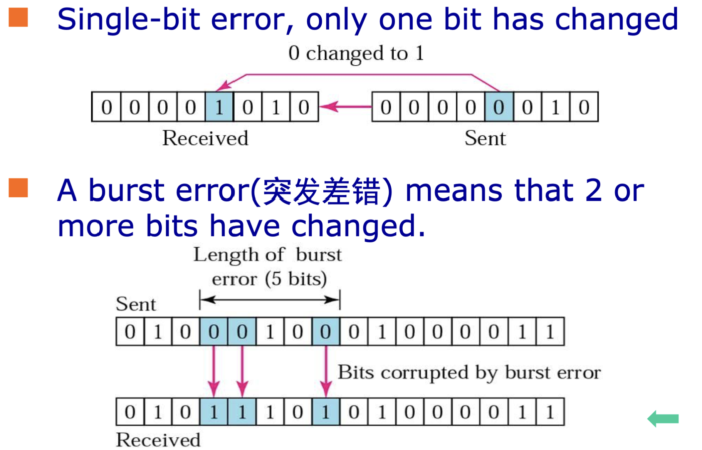
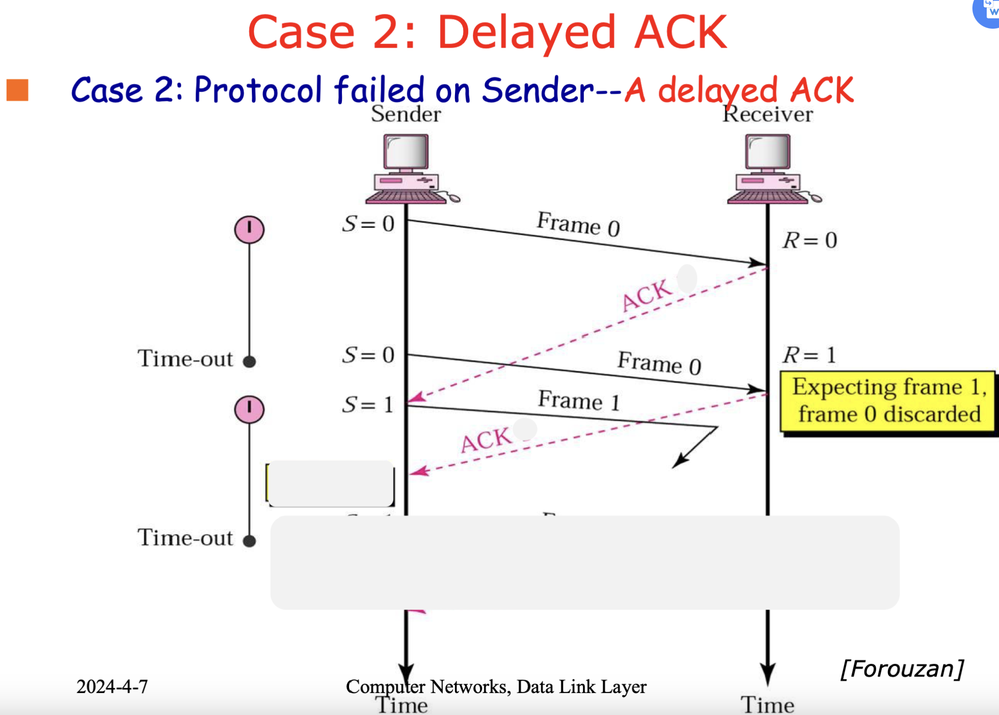

数据链路层对实际在物理层中传输的信号起到差错控制和流量控制的作用，特别是在广播信道中，需要解决多个发送方同时发送信号造成的共享信道冲突，一般由接受方控制发送方。
Technologies
Framing
定义
Encapsulates network packet into a frame，封装成帧，即将网络层发送的Packet加上Header和Trailer，组成Frame。
要求
由于数据链路层间是虚拟通信，实际信号传输通过物理层传输01比特串，这要求数据链路层从01比特串中能正确识别出帧（帧同步）。
- Simple，容易实现；
- Code Independent，加上的内容与传输的消息内容无关；
- Efficient，所用信号带宽尽量小；
- Robustness，出错后能重新同步；
方式
Character Count 字符计数法
在每帧之前加上一个字符表示帧的长度，一错后面都错；
Byte Stuffing 字符填充法
用特定的标志表示帧的开始和结束：
如果帧的其他控制和数据部分含有帧的开始符或结束符怎么办？——Transparent
Transmission透明传输
即：如果中间含有Flag，在Flag之前插入1个ESC；如果中间含有ESC，在ESC前面插入1个ESC；
Bit Stuffing 比特填充法
- 用连续的6个1表示开始和结束标志：01111110；
- 中间部分，在从左到右每出现5个1之后插入1个0，可以有效避免中间部分被识别为开始符或结束符，且容易解码；
Physical Layer Coding Violations 物理层编码违例法
适用于比较特殊的编码，比如Manchester编码，用没有出现跳变的信号表示开始符和结束符；
Error control
基本概念
Error Types
- Lost Frames；
- Damaged Frames；
Error Detection 检错
- Parity Check 奇偶校验：单冗余码；
- Cyclic Redundancy Check(CRC) 循环检错；
- Checksum：在网络层中；
Error Correction 纠错
Error Correction Code(ECC) 纠错码，分为：
* Forward Error Correction(FEC)
前向纠错：例如汉明编码；
* Automatic Repeat reQuest(ARQ)
自动重传请求：检错+重传；
* Hybrid Error Correction(HEC) 混合纠错；
Single-bit Error vs. Burst Error

注意下图中突发错误的长度为5：从第一个错误的到最后一个错误的比特数；
ECC纠错码：汉明距离
在所有合法的码字中：
* 如果需要检测出 t 位比特错误，需要最小汉明距离为 t + 1；
* 如果需要纠正出 t 位比特错误，需要最小汉明距离位 2t + 1；
The Num of Check Bits to Correct Single Bit Error
只考虑纠正一位错误：
* \(m\)：原始信息长度；
* \(r\)：check
bits，即需要增加的校验位长度；
* \(n\)：码字长度，即\(n = m + r\)；
根据原始信息长度，推出存在\(2^m\)个合法信息，每一个合法信息按照\(n\)的码字传输，能产生和它有一位比特差错的种类有\(n\)个，所有共有\((n + 1)2^m\)个码字；
\(n\)位码字的种类共有\(2^n\)个，所以要求：
\[ (n + 1)2^m \le 2^n \Leftrightarrow m + r + 1 \le 2^r \]
汉明编码：Correction of Single Bit Error
- 只允许在\(2^i\)位置处放置校验位Check Bits；
- 剩下的位置填充数据位；

Error Detection Code
Even-Parity Checking 偶校验
Polynomial Code 多项式编码
也称为CRC(Cyclic Redundancy
Check，循环冗余校验) 或 FCS(Frame Check
Sequence，帧校验序列) ；
* \(M(x)\)：将要传输的比特看成多项式，比如：\(110001 \Rightarrow x^5 + x^4 +
x^0\)；
* 运算定义为模2运算，即\(x + y = x - y =
x\oplus y\)；
* \(G(x)\)：生成多项式；
计算过程
- \(M(x) * x^r\)，即在传输的数据右边增加\(r\)个0；
- \(M(x) * x^r / G(x) \cdots R(x)\)，即作除法后得到余数多项式\(R(x)\)；
- Sender发送方：\(T(x) = M(x) * x^r + R(x) = M(x) * x^r - R(x)\)；
- Receiver接收方：\(T(x) / G(x)\)，余数一定为0；
检查过程
- 接收方如果收到错误的信息，即\(T(x) + E(x)\)；
- 正常不出错的情况下，\(T(x) / G(x)\)余数为0；
- 出错的情况下，结果为\(E(x) / G(x)\)的余数；
- 能捕捉到所有的错误；
Flow control
Flow Control Protocols
Elementary Protocols
- Utopian Simplex Protocol 乌托邦单工协议；
- 通信是单通的；
- 通信是无错的；
- 接收方缓存空间无限；
- 无需差错控制和流量控制；
- ***Simplex Stop-and-Wait Protocol for Error-Free Channel 停等协议
- 通信是单通的；
- 通信是无错的；
- 接收方缓存空间有限；
- 需要流量控制：Stop-and-Wait
- 发送方发送一个Frame，等待；
- 接收方如果正确收到信息，发送一个ACK(Acknowledgement，应答)；
- 发送方接收到ACK后，发送下一个Frame；
- 如果通信不可靠，会产生如下问题：帧错误、帧丢失或ACK丢失
- 其中，如果ACK丢失，发送方会在超时后发送第二个相同的帧，但是接收方并不知道！解决方法：Sequence Number；
- Protocol 3: Positive ACK with Retransmission(PAR)
带有重试的主动确认协议
- ARQ(Automatic Repeat reQuest) 自动重传请求
- 在每个Frame之前添加序号，来区分该Frame是重传的还是新的；
- 链路层只需要1bit，即编号空间大小为2；
- 传输层需要更大的编号空间；
- 但是还是有问题：如果ACK传输延迟了，如下图所示，那么当那个重复发送的Frame0收到后返回给发送方时，发送方认为这是Frame1的应答信号，错误地认为Frame1已经正确发送到接收方；
- 所以需要给ACK也添加序号：
- ARQ(Automatic Repeat reQuest) 自动重传请求
#define MAX_SEQ 1
typedef enum {
frame_arrival,
cksum_err,
timeout
} event_type;
#include "protocol.h"
void send() {
seq_nr next_frame_to_send = 0;
frame s;
packet buffer;
event_type event;
from_network_layer(&buffer);
while (true) {
s.info = buffer;
s.seq = next_frame_to_send;
to_physical_layer(&s);
start_timer(s.seq);
wait_for_event(&event);
if (event == frame.arrival) {
from_physical_layer(&s);
if (s.ack == next_frame_to_send) {
stop_timer(s.ack);
from_network_layer(&buffer);
next_frame_to_send = 1 - next_frame_to_send;
}
}
}
}
void receive() {
seq_nr frame_expected = 0;
frame r, s;
event_type event;
while (true) {
wait_for_event(&event);
if (event == frame.arrival) {
from_physical_layer(&r);
if (r.seq == frame_expected) {
to_network_layer(&r.info);
frame_expected = 1 - frame_expected;
}
s.ack = 1 - frame_expected;
to_physical_layer(&s);
}
}
}- Piggybacking 捎带应答
- 通信是全双工Full-duplex的；
- 当接收方收到帧后，不立刻发送ACK，而是等待网络层有发送请求时，将ACK添加到需要发送的帧中一起发送；
- 缺点是在如果长时间没有发送请求，会因等待应答而造成信道阻塞；
Sliding Window Protocols 滑动窗口协议
特点
- 可靠，面向连接的服务；
- 信道是全双工的；
- 通过CRC+重传进行差错控制；
- 通过滑动窗口进行流量控制；
Protocol 4: Sliding Window of Size 1 大小为1的滑动窗口协议
- 实际上就是停等协议，只不过变成了全双工，既能发又能收；
- 在两端同时发送数据时会出现帧重复；
- 信道效率低，特别是带宽时延积较大的信道，比如卫星通信；
Protocol 5: GBN(Go Back N 回退N步)
- 默认情况下接收窗口\(W_r = 1\)；
- \(W_t + W_r \le 2^n\)，所以发送窗口需要满足\(W_t \le 2^{n} - 1\)；
- 如果收到的帧出错，之后接受到的帧都丢弃，直到出错的帧重新发送后被正确接收，在此期间接收方保持沉默，并不会应答；
- 如果收到的帧与预期收到的不符，丢弃该帧，并回送ACK为当前最后一个已经收到的正确的帧的序号；发送方收到后需要从该ACK序号之后的帧开始重传；
- 发送方在接收到ACK或帧计时器超时后，需要回退到发错的那一帧并重传；
- 注意ACK的应答可以采用Cumulative ACK（累计ACK）：不需要每一帧都回送一个ACK，当接收方发送ACK = n时，表示n以及n之前的数据帧都已经正确收到；
- 对于 \(n\) bits的序列号码，\(MAX\_SEQ = 2^n - 1\)；
- 默认接受方的Buffer缓存空间 \(= MAX\_SEQ + 1\)；
Protocol 4 vs. Protocol 5：
Protocol 6: SR ARQ(Selective Repeat 选择重传)
- 只有被拒绝的帧才需要重传；
- 一般默认\(W_t = W_r = 2^{n-1}\)，注意与Protocol 5区分；
- 一般，认为接收方需要的Buffer空间 \(= W_r\)，帧缓存的位置 = \(frame.seq \% W_r\)，这样能否有效保证任意位置接受窗口内的帧不在同一位置；
- Frame Timer：发送方每一个缓存的帧都需要一个Timer；
- ACK Timer：只需要一个，以第一个为准；
- NCK：以下两种情况，接收方会发送NCK用于加速重传：
- 收到的数据帧校验出错；
- 收到的数据帧和预期的不符合；
- NCK的序号就是出错帧（指的是预期的帧）的序号；
- 向网络层提交数据是一个循环的过程：从接收窗口下沿开始依次提交收到的帧并向前滑动接收窗口直到空闲Buffer出现；
协议456的比较
### Performance
\[ \alpha = \frac{T_{prop}}{T_{trans}} \]
Error-free Stop-and-Wait
\[ efficiency = \frac{1}{1+2\alpha} \]
Stop-and-Wait with error
\[ efficiency = \frac{1 - p}{1 + 2\alpha} \]
Error-free Sliding-Window
\[ efficiency = \left\{\begin{matrix} \frac{W_T}{1 + 2\alpha},W_T < 1 + 2\alpha \\ 1, W_T \ge 1 + 2\alpha \end{matrix}\right. \]
Error-free Sliding-Window with Piggybacking
\[ efficiency = \frac{W_T}{2 + 2\alpha} \]
Media Access Control
见计网学习笔记(4)：介质访问控制；
Services(to Network Layer)
- Connectionless services
- Unacknowledged connectionless services：大多数局域网LAN使用无确认；
- Acknowledged connectionless services：wireless system；
- Acknowledged connection-oriented services：
Implement
方框内表示一整个Router路由器，一般有3个接口，其中1和2组成路由器的网卡(NIC，Network interface cart)；
Examples of Point-to-Point DataLink Protocols
HDLC(High-Level DataLink Control, 高级数据链路控制)
特点
- 可靠，面向连接
- 流量控制，差错控制；
- GoBackN ARQ，Selective Repeat ARQ；
- Synchronous serial transmission 同步串行链路传输；
- error detection：CRC；
- 不支持相关链路和网络参数协商；
- 不支持认证；
Frame Type
采用零比特填充。
Station Type
Point-to-Point Protocol(PPP, 点对点协议)
特点
- 只支持点到点；
- Connectionless unacknowledged service；
- 采用字节填充；
- 适配多种网络层协议；
- 支持身份认证；
- 物理层可以采用异步和同步传输；
Frame Format

- Address = 0xFF，表示支持所有站点；
- Control = 0x03，表示无编号模式；
- 以上两个字段非必需，可以不要；